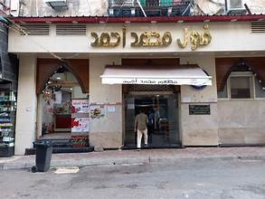
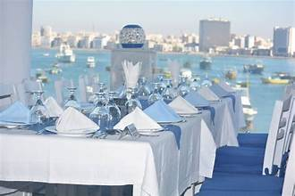
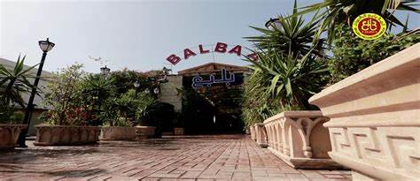
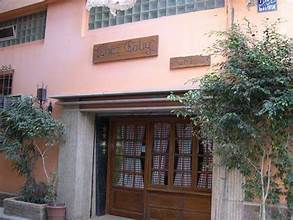
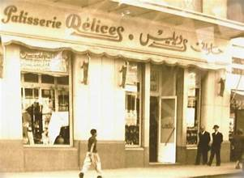
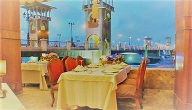
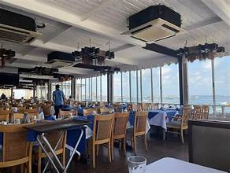
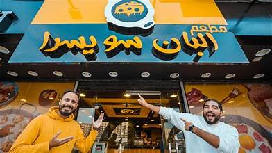
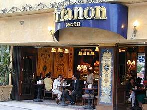
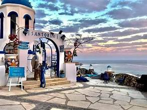

دليل سياحي لمدينة الإسكندرية
اكتشف أهم المعالم التاريخية والطبيعية بطريقة جذابة
اكتشف أهم المعالم التاريخية والطبيعية بطريقة جذابة
يقع في منطقة محطة الرمل بوسط الإسكندرية.
يعد من أشهر المطاعم الشعبية المتخصصة في الفول والفلافل.
زارته شخصيات عالمية شهيرة مثل ملكة إسبانيا.
يقدم تجربة فطار سكندري أصيل بجودة عالية.

يقع داخل النادي اليوناني في منطقة بحري.
يتميز بإطلالة ساحرة ومباشرة على قلعة قايتباي والبحر.
متخصص في المأكولات البحرية الطازجة على الطريقة اليونانية.
يعتبر من أرقى الوجهات لتناول العشاء في المدينة.

من أكبر مطاعم المشويات والأسماك في الإسكندرية.
يشتهر بتقديم الكباب والكفتة والريش بخلطته الخاصة.
يعد وجهة مثالية للعائلات والمجموعات السياحية الكبيرة.
له فروع متعددة أشهرها في سيدي بشر والداون تاون.

مطعم إيطالي عريق يقع في شارع فؤاد التاريخي.
مشهور بالبيتزا المخبوزة في فرن الحطب التقليدي.
يتميز بأجواء كلاسيكية دافئة وديكورات خشبية قديمة.
يقدم تشكيلة رائعة من المكرونات والأطباق الإيطالية الأصلية.

تأسس عام 1922 ويعتبر من أقدم معالم محطة الرمل.
يشتهر بتقديم الحلويات اليونانية والفرنسية الفاخرة.
كان مقصداً للملوك والأمراء والمثقفين عبر العقود.
يوفر جلسات راقية للاستمتاع بالقهوة والوجبات الخفيفة.

يقع في منطقة ستانلي ويطل مباشرة على الكوبري والبحر.
يعتبر من أرقى المطاعم الكلاسيكية التي تقدم المأكولات العالمية.
يتميز بالعزف الحي على البيانو لضمان أجواء رومانسية.
يشتهر بجودة الخدمة وتنوع قائمة الطعام البحرية والأوروبية.

يقع على طريق الجيش ويوفر إطلالة بانورامية على البحر.
يعتمد نظام اختيار الأسماك الطازجة وطهيها حسب الرغبة.
يشتهر بالسلطات والمقبلات السكندرية المتنوعة.
يقدم تجربة طعام بحرية عصرية ومميزة.

يقع في منطقة كامب شيزار ويشتهر بوجبات الأجبان.
مبدع في دمج السجق والبسطرمة مع خلطات الجبن السايحة.
يعتبر من الوجهات المفضلة للشباب ومحبي الابتكار في الأكل.
يقدم سندوتشات غنية بالصوصات والنكهات القوية.

يقع في مبنى فندق متروبول العريق بمحطة الرمل.
يتميز بتصميمه الملكي الفخم الذي يعود للزمن الجميل.
يقدم تشكيلة رائعة من الشوكولاتة والحلويات الغربية.
مكان هادئ ومثالي للقاءات الرسمية والاجتماعية.

مطعم يوناني حديث يقع على كورنيش سيدي بشر.
تصميمه مستوحى من ألوان وجزر اليونان الساحرة.
يقدم أطباقاً متوسطية طازجة وأجواء عصرية مريحة.
يعد مكاناً رائعاً لالتقاط الصور والاستمتاع بمنظر الغروب.
